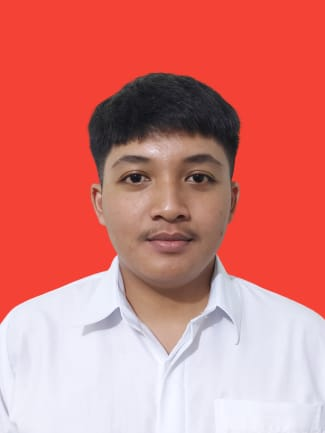
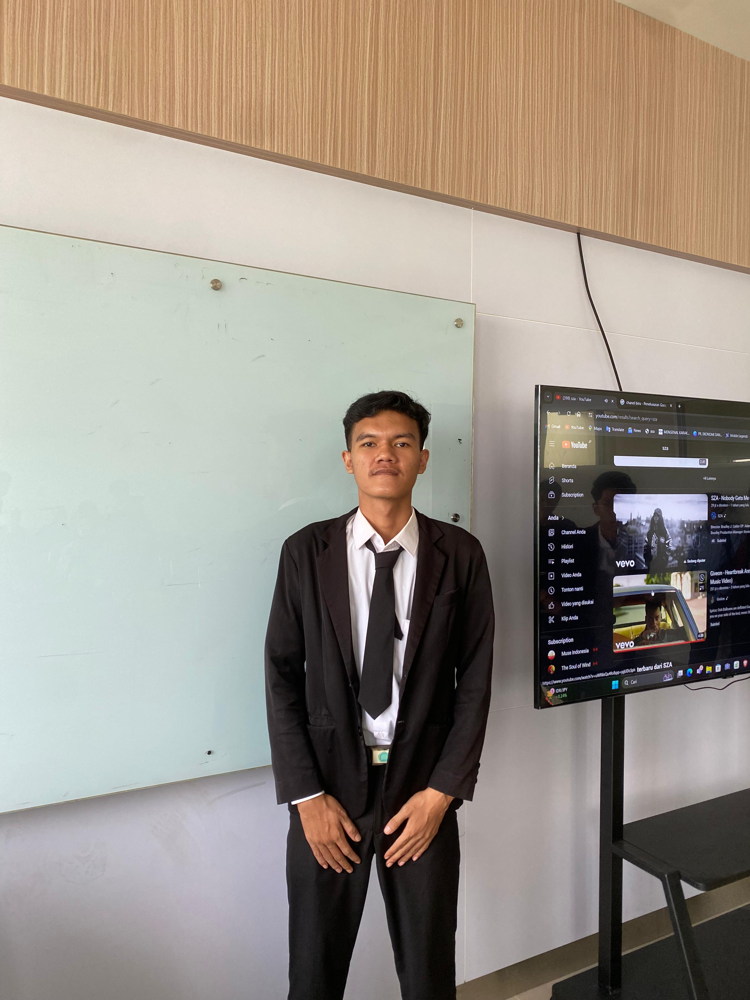

Petinggi Perusahaan Kami
Kekuatan pendorong di balik kesuksesan I SOAP
Muhammad Egi Febrian
Chief Executive Officer (CEO)
Memimpin visi dan misi I SOAP dengan penuh dedikasi.
Fajrun Habib
Chief Financial Officer (CFO)
Memastikan kesehatan keuangan dan pertumbuhan jangka panjang bagi perusahaan.

Muhammad Izzudin Islam
Chief Marketing Officer (CMO)
Mendorong strategi pemasaran untuk membangun kehadiran global I SOAP.

Muhammad Abdul Aziz Ramdhani
Chief Technology Officer (CTO)
Inovasi dan teknologi terdepan untuk produk-produk mutakhir.

Muhammad Rafly
Chief Operating Officer (COO)
Menyederhanakan operasi untuk memberikan hasil terbaik.